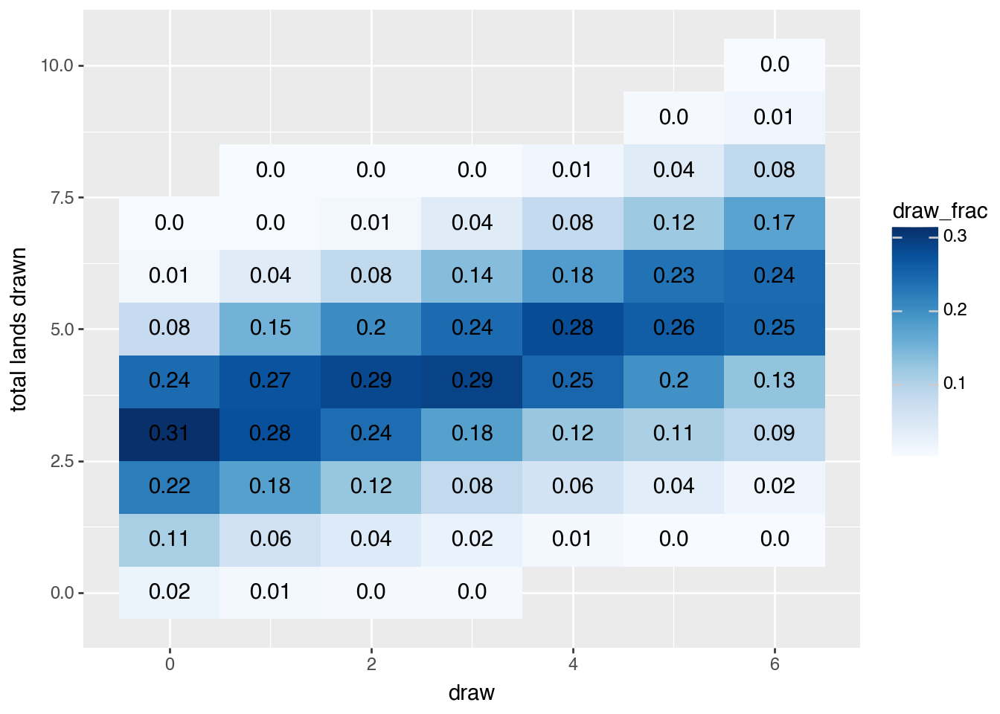
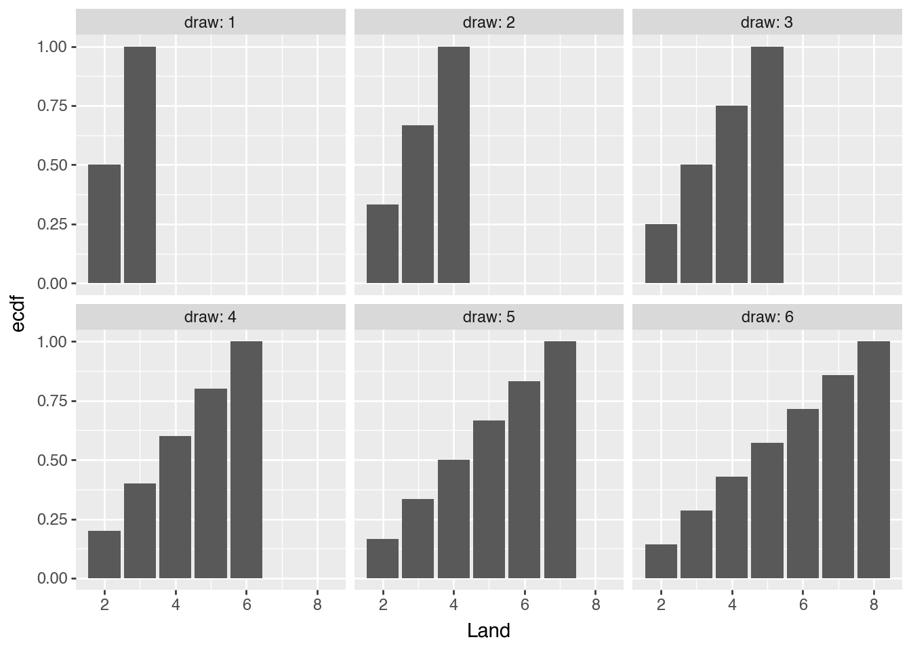
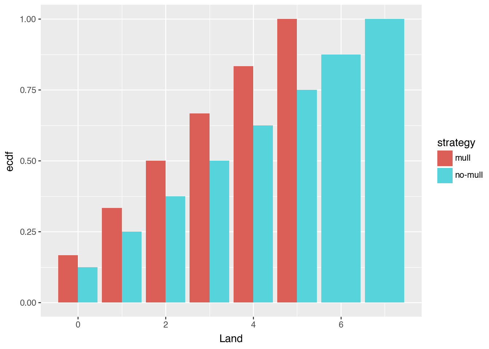

This post puts numbers to common “mana problems” in Magic: The Gathering. If you don’t play Magic, this is about using simulation instead of traditional probability distributions (i.e. the oft-misunderstood hypergeometric distribution).
In Magic, there are generally two types of cards:
Spells are the main game pieces. You need them to win the game.
Lands are the resource that lets you cast spells. You need a healthy supply of lands to play spells, and therefore win the game.
A deck of cards typically has 23 spells and 17 lands. You start with 7 cards, and draw a card each turn. If you have 7 spells in-hand (and therefore 0 lands), you can’t actually cast them until you draw lands.
Here’s an example starting hand from a shuffled deck.
Code
import pandas as pdimport duckdbimport numpy as npfrom scipy import statsimport plotnine as pndef make_deck(): deck = ["Land"for _ inrange(17)] deck.extend(["Spell"for _ inrange(23)]) np.random.shuffle(deck)return deckdef get_counts(cards):return pd.Series(cards).value_counts()# example first handget_counts(make_deck()[:7])
Spell 4
Land 3
Name: count, dtype: int64
How many lands should we expect to have in our opening hand? Probability textbooks would suggest the hypergeometric distribution, but I suggest using simulation instead.
The plot below shows that ~50% of the time we have 3 or 4 lands, which is a healthy ideal number.
I’ve also included the actual hypergeometric distribution values to check my work. They match up, but I think the simulation is much easier to follow.
Code
num_sim =601opening_hands = ( pd.DataFrame({# shuffle the deck, draw 7 cards from the top, count the lands i: get_counts(make_deck()[:7])for i inrange(num_sim) }) .T .fillna(0))# the actual distributionhg = stats.hypergeom(40, 17, 7)hg_cdf = pd.DataFrame({"Land": np.arange(0, 7)})hg_cdf["cdf"] = hg.cdf(hg_cdf.Land)# print resultsprint(duckdb.query(f""" select count(*) filter(Land between 3 and 4) / count(*) as sim_frac_3_4 , {hg.pmf(3) + hg.pmf(4)} as actual_frac_3_4from opening_hands """))# plots cdfs( pn.ggplot(data=opening_hands) + pn.geom_col(hg_cdf, pn.aes("Land", "cdf"), fill="white") + pn.stat_ecdf(pn.aes("Land")) + pn.labs(title="Opening Hand Num Lands CDF", subtitle="Bars show stats.hypergeom(40, 17, 7) CDF"))
Now we’ll simulate many draws and tally the results. We see that:
Our turn 0 results hold; ~50% of the time you have 3-4 lands (good), ~35% of the time you have 2 or fewer Lands (bad).
By your 2nd draw, ~60% of the time you’ve drawn 3-5 lands, and there’s a 15% chance you’ve only drawn 2 or fewer lands.
Code
draw_sims = ( pd.concat([ get_turn_counts(make_deck()).assign(sim_id=i)for i inrange(num_sim) ], ignore_index=True))( duckdb.sql(""" select draw , Land , count(*) as num , SUM(COUNT(*)) OVER (partition by draw) as num_draws , num / num_draws AS draw_frac from draw_sims group by draw, Land order by draw """) .to_df() .pipe(pn.ggplot)+ pn.geom_tile(pn.aes("draw", "Land", fill="draw_frac"))+ pn.geom_text(pn.aes("draw", "Land", label="round(draw_frac, 2)"))+ pn.scale_fill_continuous(cmap_name="Blues")+ pn.labs(y="total lands drawn", x="draw"))

Suppose you have drawn an opening hand with only two lands (~10% chance). What should you expect to see in the coming draws? Here we’ll draw out the cdf for each draw.
We see that by your 2nd draw, there’s a good chance you have 3 or 4 lands.
Code
print(duckdb.sql("""select count(*) filter(Land=2) as "Num Two-Land Openers" from draw_sims"""))( duckdb.sql(""" select draw , Land , count(*) as num , SUM(COUNT(*)) OVER (partition by draw) as num_draws , num / num_draws AS draw_frac from ( select sim_id from draw_sims where draw=0 and Land=2 ) as two_land_openers left join draw_sims using(sim_id) where 1=1 and draw > 0 -- first draw will always have Land=2 group by draw, Land order by draw """) .to_df().pipe(pn.ggplot)+ pn.stat_ecdf(pn.aes("Land"), geom="col") + pn.facet_wrap("draw", labeller="label_both"))
/Users/pj/Documents/trainorpj.github.io/.venv/lib/python3.13/site-packages/numpy/_core/_methods.py:135: RuntimeWarning: invalid value encountered in reduce
/Users/pj/Documents/trainorpj.github.io/.venv/lib/python3.13/site-packages/numpy/_core/_methods.py:135: RuntimeWarning: invalid value encountered in reduce
/Users/pj/Documents/trainorpj.github.io/.venv/lib/python3.13/site-packages/numpy/_core/_methods.py:135: RuntimeWarning: invalid value encountered in reduce
/Users/pj/Documents/trainorpj.github.io/.venv/lib/python3.13/site-packages/numpy/_core/_methods.py:135: RuntimeWarning: invalid value encountered in reduce
/Users/pj/Documents/trainorpj.github.io/.venv/lib/python3.13/site-packages/numpy/_core/_methods.py:135: RuntimeWarning: invalid value encountered in reduce
/Users/pj/Documents/trainorpj.github.io/.venv/lib/python3.13/site-packages/numpy/_core/_methods.py:135: RuntimeWarning: invalid value encountered in reduce

Mulligans
You have the option to “mulligan” your opening hand, i.e. you can shuffle, re-draw 7 cards, then put one on the bottom of your deck.
This is another benefit of simulation. I don’t even want to bother finding the probability distribution for this. Even if I could figure it out, I wouldn’t want to explain it to other people. People can understand code.
Here’s some janky mulligan logic. I wrote a check at the bottom to see how often we get different starting hand sizes. ~80% of the time we have 7 or 6 cards to start.
Code
def mulligan_keep_check(hand) ->bool: counts = get_counts(hand) num_lands =0if"Land"notin counts.keys() else counts.Landif3<= num_lands <=4:returnTruereturnFalsedef mulligan_choice(hand, num_mulligan: int):# Choose as many lands as you can ... not ideal, but I didn't feel# like doing something more sophisticated hand =sorted(hand) new_hand, bottom = hand[:-num_mulligan], hand[-num_mulligan:]return new_hand, bottomassert mulligan_choice(list("SLSSSLS"), 2) == (["L", "L", "S", "S", "S"], ["S", "S"])def make_deck_with_mulligan( num_start=7, max_mulligans=2, mulligan_keep_check_fcn=mulligan_keep_check, mulligan_choice_fcn=mulligan_choice):# setup keep_hand =False num_mulligans =-1# mulligan until you reach your max, or until you decide to keepwhileall([ num_mulligans < max_mulligans, not keep_hand ]):# this only updates when keep is False num_mulligans +=1# split up and and deck deck = make_deck() hand, rest_of_deck = deck[:num_start], deck[num_start:]# update state keep_hand = mulligan_keep_check_fcn(hand)if num_mulligans >0: new_hand, bottom = mulligan_choice(hand, num_mulligans) num_start =len(new_hand) deck = [*new_hand,*rest_of_deck,*bottom]return deck, num_start# check opening hand sizes w/ mulliganspd.Series([make_deck_with_mulligan()[1] for _ inrange(201)]).value_counts(normalize=True).sort_index()
The table and plot below show how it changes our opening hands. We go from a 60% chance of having 3-4 lands to a 90% chance after we mulligan.
That’s a pretty strong case for choosing a mulligan!
Code
# [(deck, num_start)]mull_sim_decks = [make_deck_with_mulligan() for _ inrange(num_sim)]mull_sim_draws = pd.concat([ get_turn_counts(deck, num_start=num_start).assign(sim_id=i, num_start=num_start)for i, (deck, num_start) inenumerate(mull_sim_decks)], ignore_index=True)comb_sims = duckdb.query("""select 'no-mull' as strategy, draw, land, 7 as num_startfrom draw_simsunion all by nameselect 'mull' as strategy, draw, land, num_startfrom mull_sim_draws""")print(duckdb.query(""" select strategy , sum(land between 3 and 4) as num_3_4 , count(*) num_sims , round(num_3_4 / num_sims, 2) as frac_3_4from comb_simswhere 1=1 and draw = 0group by strategy"""))( duckdb.query(""" select strategy , land , count(*) as num , SUM(COUNT(*)) OVER (partition by strategy) as num_draws , num / num_draws AS draw_frac from comb_sims where 1=1 and draw = 0 group by strategy, land """) .to_df().pipe(pn.ggplot)+ pn.stat_ecdf(pn.aes(x="Land", fill="strategy"), geom="col", position="dodge"))
/Users/pj/Documents/trainorpj.github.io/.venv/lib/python3.13/site-packages/numpy/_core/_methods.py:135: RuntimeWarning: invalid value encountered in reduce
/Users/pj/Documents/trainorpj.github.io/.venv/lib/python3.13/site-packages/plotnine/layer.py:364: PlotnineWarning: geom_col : Removed 4 rows containing missing values.

Where to go next
Some other directions to take this:
The composition of your deck is hugely important to what spells you can play. If most of your spells only cost one mana (i.e. land), can you live with only one or two lands in your starting hand?
Can we incorporate that into our mulligan decisions? I made the mulligan function flexible enough that you can try different strategies.
What is the ideal number of lands? Conventional wisdom (I’m sure backed up by math) says 17 is the ideal number.